|
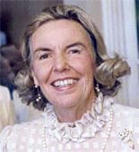 |
Patricia Reid Ford was born in San Francisco on May 17, 1924. Her middle name comes from her grandmother, Lily Reid. |
|
| Important Facts | ||
| May 17, 1923 | Born in San Francisco, California. She is the second daughter of Marion Boisot and Byington Ford. |
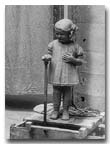 |
| 1927 | At age 3, a statue was made of Patricia which stands on her property in Atherton today. The statue was made by the famous artist and writer, Joe Mora. To find out more about Joe Mora, visit the Joe Mora web site. | |
| 1929 | The picture of Patricia when she was five years old. | |
| 1924–1935 | Lived in Pebble Beach until the age 11. |
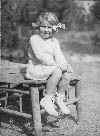 |
| April 4, 1930 | US Federal Census lists Byington Ford (39), Marion B. (32), Mary Jane (8), Patricia (6), and Audrey (3) living in Pebble Beach, California. Source: 1930 United States Federal Census, Monterey, California; Roll: 179; Page: 2A; Enumeration District: 31; Image: 865.0. | |
| 1932 | At age 9, grade 4, Patricia received a monthly report card from the Douglas School, which is now the Robert Louise Stevens School in Pebble Beach. She received A's in Art, French, Music, Penmanship, and Reading. The sports director was Dick Collins, who worked at the Equestrian Center when I was going to RLS. Source: The Douglas School monthly report. | |
| 1936–1937 | Spent 7th and 8th grade at the Sarah Dix Hamlin School for girls in San Francisco, California. She graduated on June 10, 1937. She was living at 2170 Jackson St., San Francisco, with her mother and two sisters. |
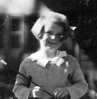 |
| Spent summers at her mother's Moon Trail Ranch in Carmel Valley, California. | ||
| 1938 | The family moved to Pasadena (585 Belle Fontaine St.) and Pat went to school at Westridge High School for Girls in Pasadena. | |
| 1938 | Pat keeps a daily diary. In the diary, she write about going to the Rose Bowl Football game, Western Union telegrams, and clippings of comics form newspapers. Source: 1938 Diary. | |
| Nov 7, 1939 | Pat wrote an essay for an English III class called “Such is Life”, which received an “A”. The story was about a girl who didn't get a part in a play. She ended the story saying “life is often very real and unfair to people who need a chance.” Source: Essay written with blue ink on paper dated November 7, 1939. | |
| April 1, 1941 | Pat wrote her mother (Mrs. Howard Ernst) a letter at 360 Grove Street, Pasadena, California, from Brownmoor High School about a recent trip to Utah and skiing with six girls. Source: Letter dated April 1, 1941. | |
| 1941 | Graduated from Brownmoor High School, a girls boarding school in Santa Fe, New Mexico. |
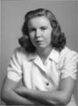 |
| Sept 28, 1944 | Pat sent a postcard to her mother at 4818 Bonvue Ave, Los Angeles, California. The card had a painting by Auguste Renoir from the Art Institute of Chicago. Source: Postcard dated Sept 28, 1944. | |
| Jan 12, 1945 | Pat sent a postcard to her mother at 4818 Bonvue Ave, Los Angeles, California. The card had a painting by Rembrandt from the Art Institute of Chicago. Source: Postcard dated Jan 12, 1945. | |
| Feb 7, 1945 | Pat wrote her mother (Mrs. Howard Ernst) at 4818 Bonvue Ave, Los Angeles, from 1300 North Dearborn Street, Chicago, Illinois. Source: Letter dated February 7, 1945. | |
| March 28, 1945 | Pat wrote her mother (Mrs. Howard Ernst) at 4818 Bonvue Ave, Los Angeles, about how thankful she was to have her as a mother. She talks about art school, dating, and signed her letter as “Reid.” Source: Letter dated March 28, 1945. | |
| 1946 | Studied at the Art Institute in Chicago, Illinois for one year. | |
| 1947 | Went to the Chouinard School of Art, 741 S. Grand View, Los Angeles, California, where she met Nadine Cardwell, a lifelong friend. | |
| November 15, 1949 | Patricia and Tommy appeared as chorus liners in the Paisano newspaper at Robles Del Rio, California. Source: The Paisano newspaper. |
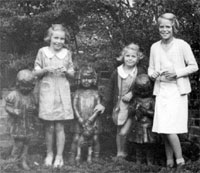 |
| November 15, 1949 | Pat had an art gallery showing at the Carmel Valley White Oak Inn called Portraits by Patricia. | |
| Met Alexander D. Henderson III at the Carmel ski club or Mission Ranch, Carmel, California. | ||
| December 9, 1950 | The engagement of Patricia Ford to Alexander D. Henderson was announced in the Monterey Peninsula Herald newspaper. | |
| February 17, 1951 | Married Alexander D. Henderson III at her mother's ranch in Carmel Valley (Moon Trail Ranch). |
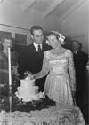 |
| Their honeymoon was in Ensenada, Mexico. | ||
| Set up housekeeping at their 797 E. Williams Street apartment in San Jose, California. | ||
| November 19, 1951 | Alexander Dawson Henderson IV was born. Mr. Henderson was still going to San Jose State College. Click on mini-photo to see full sized version. |
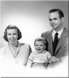 (Click on picture) |
| Fall 1952 | Moved to Alameda, California because Alex got a job at Montgomery Ward as a merchandiser. | |
| July 1953 | Moved to 609 Genevieve Lane in San Jose because Alex got a job as an Investigator at Household Finance Corporation. | |
| July 29, 1953 | Gregory Ford Henderson was born in Carmel, California. | |
| Carmel is known for its Monterey Cypress trees. The painting to the right is a lithograph, given to Pat and Alex on their wedding day by Pat's father. Source: Paul Whitman Website. |

|
|
| They bought their first house on Pruneridge Street in San Jose, California, which is now the heart of Silicon Valley. | ||
| April 4, 1955 | David Girald Henderson was born in San Jose, California. | |
| July 5, 1957 | The family moved from California to Hillsboro Beach, Florida. Stayed at the Avon by the Sea apartments (owned by Alec's father). | |
| Alex and Pat build a new house at 3532 N.E. 31st Avenue, Pompano Beach, Florida. |
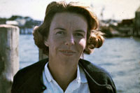 |
|
| March 10, 1957 | Scott Douglas Henderson was born at Holy Cross Hospital in Pompano Beach, Florida. | |
| Later, they moved to Sea Ranch Lakes in Ft. Lauderdale-by-the-Sea, Florida. | ||
| November 5, 1963 | Holly Henderson was born at Holy Cross Hospital in Pompano Beach, Florida. |
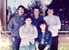 |
| 1969 | Pat and Alex are divorced. | |
| Summer 1969 | Pat and her children moved back to California. | |
| Pat rented a house in Carmel Valley, then bought a house on 1st and Dolores Street, near downtown Carmel, California. |
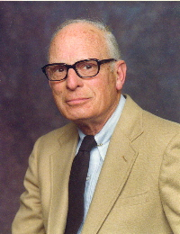 |
|
| December 5, 1970 | Mrs. Patricia Ford Henderson and Richard Reid Crass were married in All Saints Chapel, Grace United Methodist Church. The Rev. Paul E. McCoy officiated at the ceremony. Source: Newspaper clipping dated 12/19/70. | |
| 1971 | Purchased a house at 37 Deodora Drive, Atherton and then moved to 91 Inglewood Lane in Atherton, California. | |
| Bought a weekend home in Carmel on Carmelo Road close to the ocean. | ||
| January 19, 1985 | Pat's father, Byington Ford died at his home in Ventura, California. |
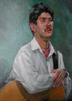 |
| 1988 | She purchased a house on Scenic Drive in Carmel, California. | |
| 1989 | Richard R. Crass died at their home in Atherton, California. | |
| June 15, 1990 | Pat's mother, Marion Boisot died at her home in Carmel Valley, California. |
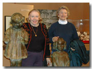 |
| September 1992 | Pat took a trip to France with Nadine Cardwell and a group of art friends including Jane Hofstetter. Source: Journal Pat wrote on her trip to France in 1992. | |
| November 28, 2003 | Patricia and her sister (Tommy) were at the Maritime Museum of Monterey for artist Jo Mora. | |
| Pat showed her oils and watercolors at the Menlo Art League in Menlo Park, California. | ||
| July 2011 - 2024 | Pat sold her house in Atherton and moved into the Vi in Palo Alto, which is a senior living community. She loved to paint, garden, and plays bridge. | |
| October 29, 2024 | Pat died at her residence at the Vi in Palo Alto, California. A memorial service was held for her in Carmel, California. An obituary was published in the Monterey County Herald and the San Jose Mercury News. |

Last update: Wednesday, March 27, 2026